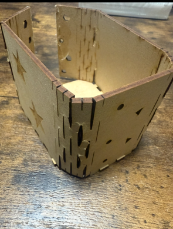
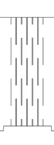
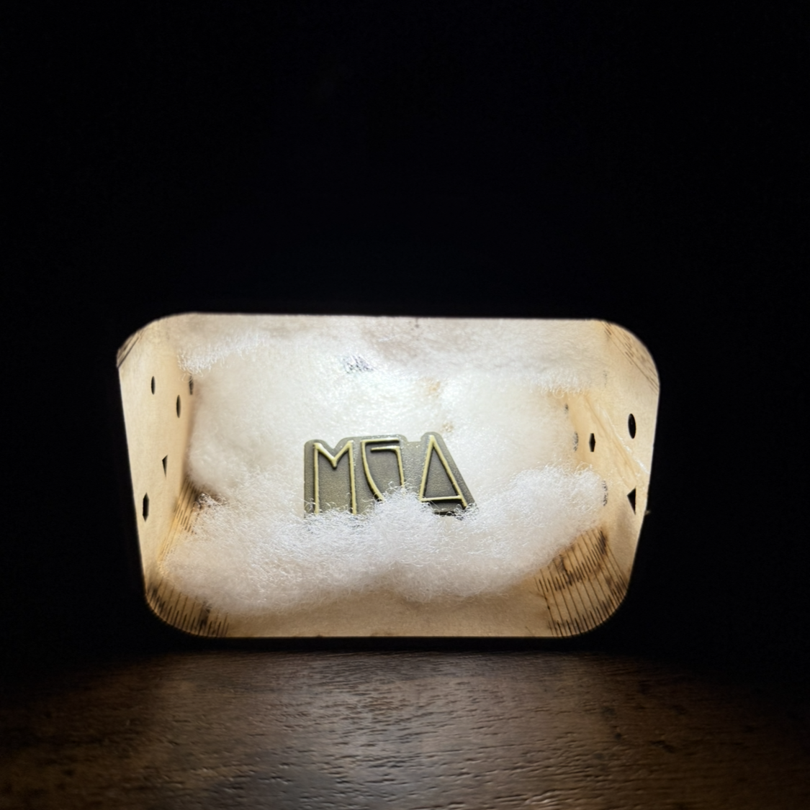

よしのレーザーカッティング課題
好きを飾る
今回の課題で私は興奮とワクワクの感情を再現したいと思いました。
これらの感情は、推しや好きなものを見ているときに湧き出てくるのではないかと考えました。

それらの考えから図形のように好きなものを飾ることができるボックスを作ることにしました。
"推しが尊い"という表現からインスピレーションを得て後ろに穴をあけて後光が差すようにもしました。
1回目
1度目はボックスのカーブの部分のラインの数が少なく、曲げる工程でバキバキに折れてしまって失敗した。

この光景を見て心が折れそうになったが何とか踏みとどまった。
このミスはカーブの部分のラインの本数が少ないことが原因だと考え
2回目は写真のように本数を4倍にした。


これをもとにリベンジをした。結果は、、、、、

見事、完成！

百均へ行き綿を購入しボックスの中に取り付けたことで神々しさもUP！
感想と課題
カーブの部分で失敗したことでどのくらいでうまく曲がるようになるのかを知る学びになった。
側面にあけた穴が小さすぎて光がほとんど漏れなかった部分が失敗だったため次回からより意識したい。
完成品adobeデータ